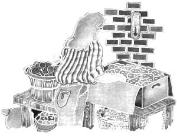
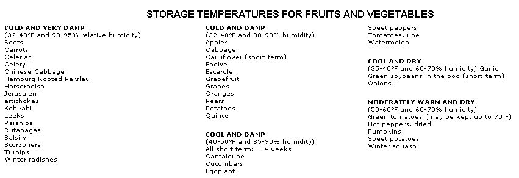
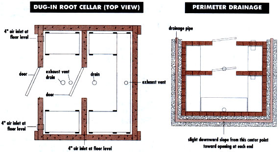
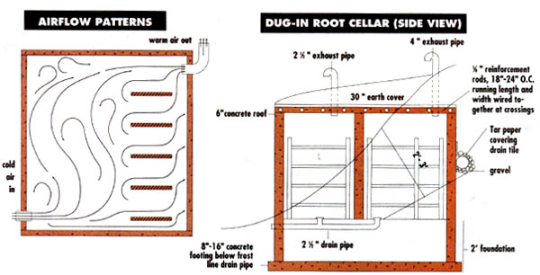
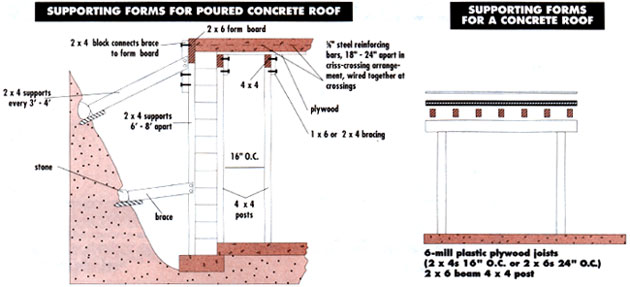

The fundamentals of root cellaring.
Root cellars are as useful today as ever. In fact, root cellars in all forms are very up-to-date, what with the costs of food and its processing getting higher every year. As we see it, root cellars are right up there with wood heat, bicycles, and backyard gardens as a simple, low-technology way of living well-independently.
The term "root cellars," as used here, includes the whole range of ingenious vegetable-saving techniques, from hillside caves to garden trenches. The traditional root cellar is an underground storage space for vegetables and fruits. Where space and lay of the land permit, these cellars are dug into a hill and then lined with brick, stone, or concrete block. Dirt-floored or insulated basement rooms-less picturesque but probably more numerous-are also traditional.
What can a root cellar do for you? Simply this: make it possible for you to enjoy fresh endive in December; tender, savory Chinese cabbage in January; juicy apples in February; crisp carrots in March; and sturdy, unsprayed potatoes in April-all without boiling a jar, blanching a vegetable, or filling a freezer bag. A root cellar can save you time, money, and supplies. How? For starters, our gas and electric bills were lower because I was not heating two-gallon kettles of water for canning, I was stuffing less into the freezer, and I didn't need to buy new jar lids or freezer bags.
Storage vegetables needn't be limited to those old standbys: carrots, potatoes, and turnips. With a really well-planned root cellar program, fresh tomatoes, tender dandelion shoots, nuts, pears, sweet potatoes, and even cantaloupes can be preserved. Even if you must buy some produce, you'll find prices of storage vegetables are usually lowest in the fall. If squash is 25 cents a pound at a roadside stand in October, you can be sure it will cost much more than that at the market in January.
More important, it is good to be able to provide for yourself, to be prepared for the winter through your own skill and forethought with your own home-grown produce. If you like to choose your food with care and live simply and self-reliantly, perhaps root cellaring is for you.
There are three basic conditions a root cellar should provide. The closer you come to matching these ideal conditions in your vegetable-storage area, the better your vegetables will keep.
Humidity: High humidity is essential to effective root cellar storage. Most root crops and leafy vegetables keep best in humidity of 90 to 95%. Providing plenty of moisture helps prevent these foods from shriveling.
You can achieve the necessary humidity level in a root cellar three ways. First, in stall a dirt floor, which will retain more natural moisture than one made of concrete or stone. We recommend spreading gravel on packed earth. This helps keep feet dry when the ground gets really damp. Should the storage area need more moisture, you can supply it by sprinkling the gravel with water, which-because of the large surface area-will evaporate readily and fill the air with moisture.
Bringing us to the second way of keeping humidity high: Add some water either by sprinkling the floor, spreading damp J (but not dripping wet) burlap bags over the produce, or placing pans of water on the root cellar floor. Such measures are often Q necessary in the fall, when you're first storing produce. Basement root cellars are
I much more likely than dug-in root cellars to need added humidity. In very moist areas root vegetables can be kept uncovered in bins and they'll stay smooth and firm. But if your humidity reading falls short of the ideal, you may get better results with a third option: Pack the vegetables-especially carrots, beets, and parsnips-in damp sawdust, sand, or moss; this cuts down surface evaporation.
What can a root cellar do for you? It can give you fresh endive in December; savory Chinese cabbage in January, Juicy apples in February;
crisp carrots in March; and sturdy potatoes in April.
It's important to remember that cool air absorbs less moisture than warm air. You get a pretty unstable situation in a place that's both cold and very damp. A slight drop in temperature can cause air that, at 34°F, say, has room for a bit more moisture, to suddenly become fully saturated at 32°. When this happens, you've reached the dew point, and the excess water that the air can no longer hold begins to condense on wall, ceiling, even vegetable surfaces. When produce becomes wet, it's more likely to spoil-even at low temperatures. To be safe, buy a hygrometer (a humidity measuring device) at the hardware store.
Ventilation: Basically, air must be admitted then monitored and circulated through a root cellar. Admit ting air to the cellar (as described below) helps keep the area at the desired low temperature. Equally important, adjusting air intake helps to reduce excessive humidity, thus preventing undesirable condensation. Air-set in motion effectively removes both vegetable odors and ethylene gas given off by stored fruits, which might otherwise produce off-flavors in other foods.
To understand how air can circulate through a root cellar, remember that warm air rises and cool air falls. In a large or tightly enclosed cellar, you'll need both an air intake and an outlet. The intake should be low, and the outlet should be high; ideally, the two should be on opposite sides of the room to best circulate the air. Cool air will enter through the low intake and warm air will be re leased through the outlet (see illustration page 80). In a small storage area, or in one with many cracks where air can enter (such as an old stone foundation) a single outlet placed high to exhaust warm air may be sufficient. Always elevate crates a few inches so that air can circulate underneath them.
Temperature: Your most important consideration. A good root cellar can both borrow cold and keep cold. You borrow cold by digging into the ground, where the temperature well below frost level remains a fairly constant 52°F or so. This works because the deep-down earth temperature is slow to be affected by ultra-cold surface temperature, so your underground vegetables will have an extra margin of protection. You can borrow cold by letting the night air into the cellar either with a win dow or a closable exhaust pipe.
If you can maintain temperatures between 32 and 40°F, you have an excellent storage place. A temperature range of 40 to 50° will still permit shorter-term storage of root vegetables and apples, and will keep onions and some of the short-lived storage vegetables like peppers, tomatoes, and eggplant in good shape for a month or so.
In an indoor root cellar, the area close to the ceiling will be a few degrees warmer than space near the floor, so you'll have at least a small difference in conditions that you can take advantage of by placing vegetables according to their different storage requirements.
A thermometer is essential for a well-run root cellar. One with minimum/maximum readings will give you a good picture of the kind of temperature variations you're working with.
The kind of root cellar you build or adapt will depend on the floor plan of your house, the lay of your land, and the temperatures and snow cover in your area.
If you have an old house with an unheated, dirt-floor basement room, you're all set. With slight modification, or in some cases none at all, you'll have an ideal vegetable-storage cellar. In a house with a heated basement, it's possible to partition off an unheated corner for vegetable storage.
If you prefer an outdoor root cellar, you can either dig into a hill or go straight underground and top the cellar entrance with a bulkhead door, patio, or porch. Most outdoor root cellars are dug into a north-facing hill or are underground on the north (coolest) side of the house. You'll find exceptions to this rule in some of the northern states and Canada, where temperatures plummet well below zero in winter, and stay there. Some of the old-time outdoor root cellars in these areas are built on southern exposures for easier winter access. Once winter sets in, it's plenty cold there even though these cellars get more sunlight than it seems they should.
If you live in an area where winter temperatures are often below 0°F and snow cover is heavy, you may prefer climbing into an under-porch storage pit to shoveling through drifts to get to a hill-cave root cellar. Many underground root cellars (such as the one detailed below) are built with an anteroom or double doors that form an airlock, which helps keep warm summer air out of the cellar and also prevents undo chilling of the produce in severe winter weather.
If your winters are mild, with average temperatures well over 30°F, you won't be able to achieve the most desirable low temperature in your cellar for keeping root vegetables. Those vegetables probably will keep very well in the garden row, and the warm-keepers like squash, onions, and sweets should do fine in a cool corner of your house.
Many people opt for a 8' X 10' space or larger-but few can fill them to capacity (a 5' X 8' space can hold 30 bushels of produce). If you plan on keeping buckets of soil to store vegetables such as celery, a 8' X 8' space should suffice. We recommend using multiple shelves to maximize space. Use only rot-resistant woods, and slat for good air circulation. Shelves should also have one- to two-inch cleat at the back to keep edges away from the wall.
With a really well-planned root cellar, fresh tomatoes, tender dandelion shoots, nuts, pears and cantaloupes can all be preserves.
An Excavated Root Cellar
As we mentioned before, there are many options when it comes to root cellaring. But unless you're lucky enough to have an existing usable structure or live in a warm climate where a garden row is a good choice, you'll want to consider an excavated root cellar like this one.
Dug-in root cellars work well because they are insulated by the earth surrounding them. The soil is a poor conductor of heat, so the temperature of the ground six feet under is cool and fairly constant. The natural moisture of the earth helps keep humidity high. Since soil is heavy, an underground root cellar should be strongly built. In addition, because frozen wet soil can expand and rupture walls, it's important to provide drainage around the cellar to stop waterlogged soil from freezing and caving in the walls of your cellar. The root cellar shown here is divided into two parts for several reasons: The small anteroom helps insulate the inner chamber from extreme heat and cold and also provides a choice of conditions, allowing your vegetable storing system to be fine-tuned.
Let's assume that you're lucky enough to have a north-facing hill and you intend to make a dug-in root cellar in the slope of the hill. You're ready to begin, but how?
Step One: As you've surely guessed, your first step is to dig a hole in the hill. You'll need to remove enough soil to make space for the volume of the cellar you plan to build. It's no help to dig a hole much larger than you really need, for all that space will have to be backfilled. Dig deeply enough so that the footer will be below the depth of the average frost penetration in your area. Most of the cellar will be protected by soil. Dig down an extra two to three feet around the door where the foundation will be most exposed to the cold. Fill with gravel up to the base of the footer.
Step Two: Lay drain pipe from the floor drains in the cellar out to daylight. The floor inside the root cellar should be a bit higher than the level of soil outside the door so that water drains off.
Step Three: Pour the concrete footer. After the ground in the cellar site is leveled, make forms from 2 X 8 lumber. The footer should be 16" wide for a concrete block wall and 8" wide for a poured concrete wall 4" thick (in other words, twice as wide as the wall will be). Technically, of course, the footer will be only 7-1/4" deep, since that is the actual dimension of a piece of 8" lumber these days. Put several reinforcing rods in the concrete poured over the dug-out spot at the door. Let the footer cure for three to seven days before proceeding with the walls.
Step Four. Start laying concrete blocks.
Since you've sensibly planned the dimensions of your cellar in multiples of 8" (half the length of a standard concrete block allowing for mortar joints), you should have no trouble here. Leave a gap for a standard door. For vent pipes in side walls, either leave a gap between blocks or chip one block. Your cellar should be from 6-1/2' to 8' deep.
Step Five. Make forms to support the poured concrete roof. The roof should be reinforced with crossed and tied reinforcing bars as shown in the diagram. The bars should be embedded in the bottom half of the poured concrete roof. If they're too close to the surface they don't do much to strengthen the roof. The pour is made di rectly on plastic-covered 3/4" plywood, which is supported by joists resting on beams, which are held up by 4 X 4 posts. You'll also need a form running around the roof perimeter to hold the concrete ceiling until it dries and hardens. Make this form out of 2 X 6 lumber and attach supports at the corners and at least every 4' along the sides. Without these supports, the weight of the concrete is likely to bulge the forms and then drip through the gap. Why cover the keep water out of the cellar but to prevent pressure on the rear wall of the root cellar from expansion due to frozen wet soil.
Backfill with gravel above the pipe. If filling in manually, you can place a board behind the pipe and gradually fill in soil behind the board, pulling the board out every few inches.
Step Seven: Finish backfilling around the cellar sides. Later you may need to fill in with more soil as the dist urbed ground settles.
Step Eight: Using construction cement, attach rigid two-inch sheets of urethane or Styrofoam to the exterior surface of the root cellar roof. Step Nine: Spread a sheet of six-mil polythylene over the insulation. Step Ten: Cover the root cellar with two to four feet of earth. Plant grass on the roof to hold the soil so it doesn't run off when it rains. Step Eleven: Spread gravel on the root cellar floor (optional). Step Twelve: Make shelves. Be sure to leave that two-inch gap between the shelf and the wall to allow for air circulation. Brace the shelves with scrap wood as shown. Better not to make the shelves too deep, 16 inches should be plenty. Step Thirteen: Insulate a standard door with 2 X 2 lumber nailed all around the edge on the inside. Fit two-inch Styrofoam inside this frame. Cover the Styrofoam with Aspenite or similar paneling. If you can maintain between 32 and 40°F, you have an excellent storage place.
In our own experiments with storing live winter vegetables, we discovered a pleasure akin to the contentment of dressing by the warm fire on a cold morning.
Other Keys to Root Cellar Success Now that you know how to construct your root cellar, a few hints on how to make the most of it: Accessibility: The more convenient your root cellar is, the more useful it will be to you. A root cellar that is close to the house, easy to clean, well lit (a bare light bulb is fine), and handy is the most satisfying.
Canned goods: Don't keep jars of canned goods in your main vegetable-storage area. The level of dampness you need for your root crops will rust the lids.
Cooperative Root Cellaring: As we discussed earlier, a space of 8' X 8' should be plenty for the average family. But consider setting up a cooperative root cellar, with maintenance tasks shared by several families. Building the cellar could be a joint effort, too. Or one owner could accept produce and charge a small rent or accept barters. Darkness: An electric light is a big help when you go to plunder your store, but between times the root cellar should be dark. Light deteriorates some storage vegetables. If you ventilate a basement room by raising an outside window, be sure to shade it.
Pests: Close all spaces as tightly as you can to keep the mice out. This means screening all vent pipes and windows and making sure the door fits tightly.
Storage: The debate is crates vs. half-bushel baskets. Half-bushel baskets are light in weight and easy to handle. Crates utilize space more efficiently and they can be stacked. You decide.
In our own experiments with storing live winter vegetables, we discovered a pleasure akin to the contentment of dressing by the warm fire on a cold morning-the pleasure of delving into one's own store for food to put on the winter table. As we shiver our way back to the warm kitchen with parsnips in our pockets, a handful of potatoes, and a bag of carrots, we feel very good because we've managed to grow it and to keep it. We wish each of you the same kind of satisfaction. Editor's note: Material in this article appears in Mike and Nancy Bubel's new edition of Root Cellaring: Natural Cold Storage of Fruits & Vegetables (Second Edition). The book is available from. Storey Communications, Inc., Schoolhouse Road Pownal VT 05261(802/823-5811), and contains detailed plans for all types of root cellars, plus a number of wonderful insights and tips.
|
 What can a root cellar do for your? It can give you fresh endive in December; savory Chinese cabbage in January, juicy apples in February; crisp carrots in March; and sturdy potatoes in April. |
Co-author Nancy Bubel, cellar-bound with her garden's bounty |
 |
|
 |
 |
 |